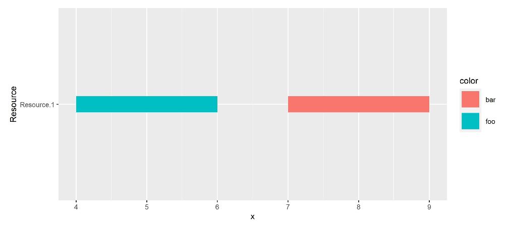
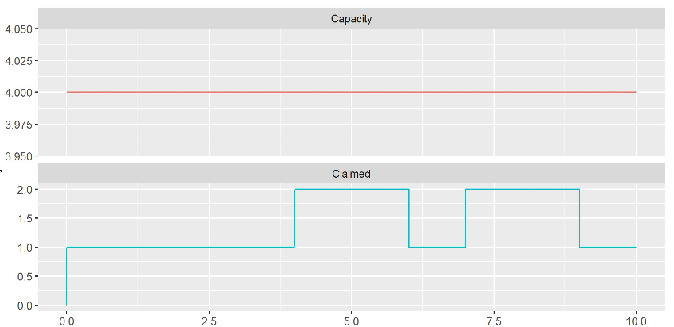

Resources
Resources are a powerful way of process interaction. Next to process definitions, resources are usually the most important elements of a simulation. Resources allow modeling rate-limits which are omnipresent in every business process.
A resource has always a capacity (which can be zero and even negative). This capacity will be specified at time of creation, but can be changed later with r.capacity = newCapacity. Note that this may lead to requesting components to be honored if possible.
There are two of types resources:
- Claimable resources, where each claim is associated with a component (the claimer). It is not necessary that the claimed quantities are integer.
- Depletable resources, where only the claimed quantity is registered. This is most useful for dealing with levels, lengths, etc.
Claimable Resources
Claimable resources are declared with:
val clerks = Resource("clerks", capacity = 3)
Claimable resources have several attributes to query their status
clerks.claimed // currently claimed quantity
clerks.available // currently available quantity
clerks.capacity // current capacity
clerks.occupancy // calculated by claimedQuantity / capacity
clerks.requesters // components currently requesting it
clerks.claimers // components currently claiming it
clerks.capacity = 3 // set capacity to 3
Any component can request from a resource in its process method. The user must not use request outside of a component's process definition.
request has the effect that the component will check whether the requested quantity from a resource is available. It is possible to check for multiple availability of a certain quantity from several resources.
Claimable resources have a queue called requesters containing all components trying to claim from the resource. In addition, there is a list claimers containing all components claiming from the resource. Both queues can not be modified but are very useful for analysis.
Notes
requestis not allowed for data components or main.- If to be used for the current component (which will be nearly always the case), use
yield (request(...)). - If the same resource is specified more that once, the quantities are summed.
- The requested quantity may exceed the current capacity of a resource.
- The parameter
failedwill be reset by a callingrequestorwait.
Some Examples
Depletable Resources
For depletable (which are also sometimes referred to as anonymous) resources, it may be not allowed to exceed the capacity and have a component wait for enough (claimed) capacity to be available. That may be accomplished by using a negative quantity in the Component.request() call. However, to clarify the semantics of resource depletion, the API includes a dedicated DepletableResource.
- A depletable resource can be consumed with
Component.take(). - A depletable resource can refilled/recharged with
Component.put().
Info
Both put() and take are just typesafe wrappers around request(). With put() quantities of resources are negated before calling Component.request() internally.
To create a depletable resource we do
val tank = DepletableResource(capacity = 10, initialLevel = 3)
We can declare its maximum capacity and its initial fill level. The latter is optional and defaults to the capacity of the resource.
In addition to the Resource attributes, depletable resources have the following attributes to streamline model
building
level- Indicates the current level of the resourceisDepleted- Indicates if depletable resource is depleted (level==0)isFull- Indicates if depletable resource is at full capacity
The model below illustrates the use of take and put. See the Gas Station simulation for a living example.
Examples using depletable resources * Shipyard * Lunar Mining which models deposits as depletable resource * Gas Station where the central fuel storage is modeled as depletable resource
Request Scope
The recommended request usage pattern for resources is the request scope which
- requests a resource,
- executes some action,
- and finally releases the claimed resources.
request(clerks) { //1
hold(1, description = "doing something") //2
} //3
In the example, kalasim will release the clerks automatically at the end of the request scope.
When requesting from a single resource in a nested way, claims are merged.
Unscoped Usage
The user can omit the request scope (not recommended and mostly not needed), and release claimed resources
with release().
request(clerks)
hold(1, description = "doing something")
release(clerks)
Typically, this is only needed when releasing a defined quantity (other than the default quantity 1) from a resource with c.release(), e.g.
customer.release(clerks) // releases all claimed quantity from r
customer.release(clerks, 2) // release quantity 2 from r
After a release, all other requesting components will be checked whether their claims can be honored.
Quantity
Some requests may request more than 1 unit from a resource. The number of requested resource units is called request quantity. Quantities are strictly positive, and kalasim also supports non-integer quantities. To request more than one unit from a resource, the user can use the follow API:
// request 1 from clerks
request(clerks)
// request 2 elements from clerks
request(clerks, quantity = 2)
// also, an infix version is supported
request(clerks withQuantity 2)
// request can be decimals
request(clerks, quantity = 1.234)
// quantities must be positive. This will FAIL with an error
request(clerks, quantity = -3) // will throw exception!
Request Honor Policies
When requesting, it may (and will) happen that a resource is currently fully claimed, and the request can not be honored right away. Requests may even queue up, if a resource is under more demand than it can serve. To resolve competing requests in an orderly fashion, kalasim supports different honor policies. An honor policy defines the order in which competing requests are honored.
Honor policies are applied to both claimable and also depletable resources.
Policy implementations extend org.kalasim.RequestHonorPolicy.The following policies are supported:
- Strict first come, first serve (
StrictFCFS, default). This policy will honor request in order of appearance. So, it actually will wait to honor "big" requests, even if smaller requests that could be honored already are queueing up already. This is the default policy in kalasim, as we assume this being the most intuitive behavior in most situations. - Relaxed first come, first serve (
RelaxedFCFS): This policy will honor claimable requests first. It will honor small requests even if larger requests are already waiting longer in line. FCFS is used as secondary order scheme in situations where multiple concurrent requests of the same quantity are waiting in line. - Smallest Quantity First (
SQF) This policy tries to maximize "customer" throughput. Also this policy will fall back to an FCFS to resolve ambiguities. It will maximize the total number of requests being honored, whereas large requests may need to wait for a long time. For depletable resources, just imagine a resource that is constantly low on supply. When new supply becomes available, the resource could serve as many requesters as possible. Also, for regular resources this concept applies, e.g. in customer support, where customers require one or multiple mechanics, and the company decides to serve the least staffing-intense requests first. - Weighted FCFS (
WeightedFCSC): Here the user can supply a weightαthat is used to compute an ordering based onα * time_since_insert / quantity. This will progressively weigh the time since the request against request quantity. The policy will prefer smaller requests, but will ensure that also larger request are finally be honored. - Random Order (
RandomOrder): This honor policy will honor requests in a random order. Sometimes real world processes lack a structured policy to resolve concurrent demand, so it may help understanding the current situation, before working out a better planning strategy.
As of now, the user can not provide custom RequestHonorPolicy implementations. To realize more sophisticated resource request regimes, she must implement their business specific request mechanism separately.
Important
Priorities always take precedence over the honor policy set for a resource. If a user sets a request priority, it will be respected first. That is, it does always try honoring by priority first, and only once all requests at the highest priority level are honored, it will climb down the ladder. Within a priority-level the selected honor policy is applied.
Note
A SQF policy could also be realized by using the negated quantity as request priority. However, for sake of clarity is recommended to use priorities to actually reflect business/domain needs, and use the provided SQL as baseline policy.
Request Priority
As multiple components may request the same resource, it is important to prioritize requests. This is possible by providing a request priority
request(clerks, priority = IMPORTANT)
// or equivalently using the dsl-request-builder syntax
request(clerks withPriority IMPORTANT)
Irrespective of the used honor policy, kalasim will always honor requests on a resource sorted by priority.
There are different predefined priorities which correspond to the following sort-levels
LOWEST(-20)LOW(-10)NORMAL(0, Default)IMPORTANT(10)CRITICAL(20)
The user can also create more fine-grained priorities with Priority(23)
Capacity Limit Modes
It may happen that request() (regular resources), take() or put() (depletable resources) would fail because the request quantity exceeds a resource's capacity. A CapacityLimitMode can be configured to handle such situations gracefully:
FAIL- Fail with aCapacityLimitExceptionif request size exceeds resource capacity. (Default)SCHEDULE- Schedule request even the currentcapacitywon't ever honor the request, hoping for a later capacity increase.CAP- Depletable resources also support cappingputrequests at capacity level
Multiple resources
It is also possible to request for more resources at once. To enable this functionality in a typed manner, we provide a small builder API containing withPriority, withQuantity, and andPriority. In the following examples, we request 1 quantity from clerks AND 2 quantities from assistance.
request(
fireBrigade withQuantity 10,
ambulance withPriority IMPORTANT,
police withQuantity 3 andPriority IMPORTANT
)
Another method to query from a pool of resources are group requests. These are simply achieved by grouping resources in a List before requesting from it using oneOf=true.
//// ResourceGroups.kts
import org.kalasim.Component
import org.kalasim.Resource
import kotlin.time.Duration.Companion.minutes
val drMeier = Resource()
val drSchreier = Resource()
val doctors: List<Resource> = listOf(drMeier, drSchreier)
object : Component() {
override fun process() = sequence {
request(doctors, oneOf = true) {
hold(5.minutes, "first aid")
}
// the patient needs brain surgery, only Dr Meier can do that
request(drMeier) {
hold(10.minutes, "brain surgery")
}
}
}
Typical use cases are staff models, where certain colleagues have similar but not identical qualification. In case of the same qualification, a single resource with a capacity equal to the staff size, would be usually the better/correct solution.
Resource Selection
To request alternative resources, the user can set the parameter request(r1, r2 withQuantity 3, oneOf=true), which will would result in requesting 1 quantity from r1 OR 3 quantities from r2. With oneOf=true, we express to the simulation engine, that fulfilling one claim only is sufficient.
To also enable more controlled resource selection scenarios, there is a special mechanism to select resources
dynamically. With selectResource() a resource can be selected from a list of resources using a policy. There are several policies provided via ResourceSelectionPolicy:
ShortestQueue: The resource with the shortest queue, i.e. the least busy resource is selected.RoundRobin: Resources will be selected in a cyclical order.FirstAvailable: The first available resource is selected.RandomAvailable: An available resource is randomly selected.Random: A resource is randomly selected.
The RandomAvailable and FirstAvailable policies check for resource availability i.e. whether the current capacity is sufficient to honor the requested quantity (defaulting to 1). Resources that do not meet this requirement will not be considered for selection. When using these policies, an error will be raised if all resources are unavailable.
Warning
With selectResource, a resource will be only selected. It won't actually request it.
Example
////ResourceSelection.kts
import org.kalasim.*
import org.kalasim.ResourceSelectionPolicy.ShortestQueue
createSimulation {
enableComponentLogger()
val doctors = List(3) { Resource() }
class Patient : Component() {
override fun process() = sequence {
val requiredQuantity = 3
val selected = selectResource(
doctors,
quantity = requiredQuantity,
policy = ShortestQueue
)
request(selected withQuantity requiredQuantity) {
hold(10)
}
}
}
ComponentGenerator(exponential(1).minutes) { Patient() }
run(100)
}
An alternative more direct approach to achieve round-robin resource selection (e.g. for nested calls) could also be implemented (example) with an iterator.
Events
Resources will log all changes with 2 event types
Resource Event
Events of type org.kalasim.ResourceEvent will indicate changes as they occur. The following fields are included in each event
requestId: Long- A unique id, that allows to trace requests in timetime: SimTimecurComponent: Component?requester: SimulationEntityresource: Resourcetype: ResourceEventType- EitherREQUESTED,CLAIMED,RELEASED,PUTorTAKE.quantity: Double
Resource Activity Event
Events of type org.kalasim.ResourceActivityEvent will be logged at the end of a scoped request block. The following fields are included in each event
requested: SimTimehonored: SimTimereleased: SimTimerequester: Componentresource: Resourceactivity: Stringquantity: Double
Activity Log
Resources have a activities attribute that provides a history of scoped requests as a List<ResourceActivityEvent>
r1.activities
.plot(y = { resource.name }, yend = { resource.name }, x = { start }, xend = { end }, color = { activity })
.geomSegment(size = 10.0)
.yLabel("Resource")

This visualization is also provided by a built-in display() extension for the activity log.
There's also a notebook with a complete example.
Timeline
The timeline attribute of a resource reports the progression of all its major metrics. The timeline provides a changelog of a resource in terms of:
claimedcapacitycapacityof the resourceavailabilityof the resourceoccupancyof the resource# requestersin the queue of the resource at a given time# claimersclaiming from the resource at a given time
For convenience also 2 inferrable attributes are also included:
availabilityoccupancy
Technically, the timeline is a List<ResourceTimelineSegment> that covers the entire lifespan of the resource as step functions per metric.
Example (from example notebook) that illustrates how the timeline can be used to visualize some aspects of the resource utilization over time.
r.timeline
.filter { listOf(ResourceMetric.Capacity, ResourceMetric.Claimed).contains(it.metric) }
.plot(x = { start }, y = { value }, color = { metric })
.geomStep()
.facetWrap("color", ncol = 1, scales = FacetScales.free_y)

This visualization is also provided by a built-in display() extension for the timeline attribute.
Monitors
Resources have a number of monitors:
- claimers
queueLengthlengthOfStay
- requesters
queueLengthlengthOfStay
claimedTimelineavailabilityTimelinecapacityTimelineoccupancyTimeline(= claimed quantity / capacity)
By default, all monitors are enabled.
With r.printStatistics() the key statistics of these all monitors are printed. E.g.
{
"availableQuantity": {
"duration": 3000,
"min": 0,
"max": 3,
"mean": 0.115,
"standard_deviation": 0.332
},
"claimedQuantity": {
"duration": 3000,
"min": 0,
"max": 3,
"mean": 2.885,
"standard_deviation": 0.332
},
"occupancy": {
"duration": 3000,
"min": 0,
"max": 1,
"mean": 0.962,
"standard_deviation": 0.111
},
"name": "clerks",
"requesterStats": {
"queue_length": {
"all": {
"duration": 3000,
"min": 0,
"max": 3,
"mean": 0.564,
"standard_deviation": 0.727
},
"excl_zeros": {
"duration": 1283.1906989415463,
"min": 1,
"max": 3,
"mean": 1.319,
"standard_deviation": 0.49
}
},
"name": "requesters of clerks",
"length_of_stay": {
"all": {
"entries": 290,
"ninety_pct_quantile": 15.336764014133065,
"median": 6.97,
"mean": 5.771,
"ninetyfive_pct_quantile": 17.9504616361896,
"standard_deviation": 6.97
},
"excl_zeros": {
"entries": 205,
"ninety_pct_quantile": 17.074664209460025,
"median": 7.014,
"mean": 8.163,
"ninetyfive_pct_quantile": 19.28443602612993,
"standard_deviation": 7.014
}
},
"type": "QueueStatistics"
},
"type": "ResourceStatistics",
"timestamp": 3000,
"claimerStats": {
"queue_length": {
"all": {
"duration": 3000,
"min": 0,
"max": 3,
"mean": 2.885,
"standard_deviation": 0.332
},
"excl_zeros": {
"duration": 3000,
"min": 1,
"max": 3,
"mean": 2.885,
"standard_deviation": 0.332
}
},
"name": "claimers of clerks",
"length_of_stay": {
"all": {
"entries": 287,
"ninety_pct_quantile": 30,
"median": 0,
"mean": 30,
"ninetyfive_pct_quantile": 30,
"standard_deviation": 0
},
"excl_zeros": {
"entries": 287,
"ninety_pct_quantile": 30,
"median": 0,
"mean": 30,
"ninetyfive_pct_quantile": 30,
"standard_deviation": 0
}
},
"type": "QueueStatistics"
},
"capacity": {
"duration": 3000,
"min": 3,
"max": 3,
"mean": 3,
"standard_deviation": 0
}
}
With println(r) a summary of the contents of the queues can be printed. E.g.:
{
"claimedQuantity": 3,
"requestingComponents": [
{
"component": "Customer.292",
"quantity": 1
},
{
"component": "Customer.291",
"quantity": 1
}
],
"creationTime": 0,
"name": "clerks",
"claimedBy": [
{
"first": "Customer.288",
"second": null
},
{
"first": "Customer.289",
"second": null
},
{
"first": "Customer.290",
"second": null
}
],
"capacity": 3
}
Querying of the capacity, claimed quantity, available quantity and occupancy can be done with:
r.capacity, r.claimedQuantity, r.availableQuantity and r.occupancy. All quantities are tracked by corresponding level monitors to provide statistics.
If the capacity of a resource is constant, which is very common, the mean occupancy can be found with:
r.occupancyMonitor.statistics().mean
When the capacity changes over time, it is recommended to use:
occupancy = r.claimedTimeline.statistics().mean / r.capacityTimeline.statistics().mean()
to obtain the mean occupancy.
Note that the occupancy is set to 0 if the capacity of the resource is <= 0.
Pre-emptive Resources
It is possible to specify that a resource is to be preemptive, by adding preemptive = true when the resource is created.
If a component requests from a preemptive resource, it may bump component(s) that are claiming from the resource, provided these have a lower priority. If component is bumped, it releases the resource and is then activated, thus essentially stopping the current action (usually hold or passivate).
Therefore, a component claiming from a preemptive resource should check whether the component is bumped or still
claiming at any point where they can be bumped. This can be done with the method Component.isClaiming(resource) which is true if the component is claiming from the resource, or the opposite (Component.isBumped) which is true is the component is not claiming from the resource.
Examples using preemptive resources